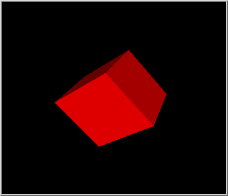
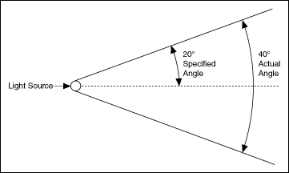

The 3D picture control displays graphical representations of 3D objects. A 3D scene is a 3D object or a collection of 3D objects that you can view in the 3D picture control or in a separate scene window. As you design a 3D scene, you can generate multiple 3D objects and specify their orientation, appearance, and relationship to other objects within the 3D scene. You can set characteristics of the 3D scene such as the style and location of a light source and how a user-controlled camera interacts with the 3D scene.
The following image shows a 3D picture control that contains a simple 3D scene.

The objects that appear in a 3D scene are graphical representations of physical objects. A 3D object is a set of vertices that exists in 3D space and any connections that may or may not exist between those vertices. When you create a 3D scene, you create one or more 3D objects to comprise the 3D scene. Use the Create Object VI to create 3D objects.
After you create a 3D object, you must define how that object appears in the 3D scene. You can set the following drawable attributes for a 3D object:
LabVIEW draws new objects with a default size and color and displays the objects in the center of the 3D scene. However, you can use transformations and textures to change the size, orientation, location, or surface appearance of a 3D object in a 3D scene. You also can use the SceneObject properties and SceneObject methods to configure a 3D object.
|
Note��You cannot apply texture to a text object. |
A transformation changes the orientation or appearance of a 3D object according to a mathematical rule. Use the Transformations VIs to change the size, orientation, or location of an object in a 3D scene. You can apply the following three common transformations to 3D objects:
|
Note��To prevent 3D objects from appearing distorted, avoid scaling objects beyond the clipping planes. The default value of the near clipping plane, which defines the plane nearest the viewer, is 0 units. The default value of the far clipping plane, which defines the clipping plane farthest from the viewer, is 10000 units. You can use the Projection:Perspective method to set values for clipping planes programmatically. |
For each transformation, you can perform an absolute transformation, which transforms the 3D object from the initial position of the object, or a relative transformation, which transforms the 3D object from the current position of the object. For example, use the Set Translation VI to translate a 3D object absolutely. Use the Translate Object VI to translate a 3D object relatively.
Refer to the Order of Transformations VI in the labview\examples\Graphics and Sound\3D Picture Control directory for an example of how to apply transformations to 3D objects.
 Open example�
Open example�
 Find related examples
Find related examples
You can change the surface appearance of a 3D object by wrapping a 2D image around the 3D object. This process is called applying a texture. For example, you can turn a sphere into a planet by applying a 2D image of the planet surface to the sphere. The image of the planet surface is the texture. Use the Specials:Texturing property to enable texturing for each 3D object to which you want to apply a texture. Then, use the Texture VI to create a new texture. Use the SceneTexture properties and SceneTexture methods to configure the texture.
Refer to the 3D Model of Solar System VI in the labview\examples\Graphics and Sound\3D Picture Control directory for an example of applying texture to 3D objects.
Open example�
Find related examples
You can create relationships between objects in a 3D scene. Objects act as either parents or children. If you apply changes to a parent object, the child objects reflect those changes. Use object relationships in large 3D scenes to program more efficiently and for 3D scenes that involve related movement. For example, in a replica of the solar system, a change in the revolution speed of the Earth affects the revolution speed of the moon. Create the moon as a child of the Earth to avoid configuring transformation changes for both objects.
Refer to the 3D Model of Solar System VI in the labview\examples\Graphics and Sound\3D Picture Control directory for an example of creating relationships between 3D objects.
Open example�
Find related examples
LabVIEW can render a visible 3D scene with or without a configured light source. You can configure a light source to achieve visual effects such as sunlight or spotlights in a visible 3D scene. You can create three types of lights in a 3D scene: directional lights, positional lights, and spotlights. Use the New Light VI to create a new light source. You also can use the SceneLight properties to configure additional aspects of light sources, such as color, attenuation, and intensity.
Use a directional light to create a light source that appears infinitely distant from objects in a 3D scene, mimicking the effect of sunlight. Because the position of a directional light is at infinity, you define only a direction for the light. Use the Direction property to configure the light direction.
Use a positional light if you want to configure a specific position, or origin, for the light. For a positional light, you specify x, y, and z coordinates for the position of the light source and coordinates for the direction of the light. The x, y, and z coordinates that specify the position of the light are relative to the object in the scene that owns that light, where the position of the owning object represents the coordinates 0, 0, 0. For example, if you want to position a light source directly beneath a 3D object, you can set the position of the light source to 1 object coordinate beneath the object by using the coordinates 0, -1, 0. Another 3D object located at 0, -3, 0 relative to the first object appears beneath the positional light, and assuming the direction of the light is toward the first object, the light source does not affect the second object.
To add a positional light to a 3D scene, attach that light to an object in the 3D scene by wiring the object refnum and the light refnum to the Light:Add Light method. The object then owns the light. Use the Direction property to configure the light direction, and the Position property to configure the light position.
Use a spotlight if you want to specify both a position and a direction for a light. A spotlight is a positional light with a defined direction and angle. Set up the light as a positional light, but use the Cutoff property to define the angle of a spotlight. The value you wire to this property is equivalent to half the angle of the actual spotlight. For example, if you want the spotlight to emit a 40 degree angle of light, set this property to 20. This property accepts values 0 to 90 and 180, where 180 represents no cutoff.

Refer to the Using Meshes VI in the labview\examples\Graphics and Sound\3D Picture Control directory for an example of configuring light sources.
Open example�
Find related examples
You can configure how a user-controlled camera interacts with a 3D scene, configure a separate scene window in which to display the 3D scene, and configure a 3D scene to update continuously to display live data.
Right-click the 3D picture control and select Camera Controller from the shortcut menu to specify how the camera interacts with the 3D scene. The Operating tool acts as the camera that you move about the 3D scene. You also can use the SceneGraphDisplay properties or SceneWindow properties to configure the scene camera programmatically.
You can configure a separate scene window in which to display the 3D scene when the VI runs. Use the Setup Window VI to configure a new scene window. You also can use the SceneWindow properties and SceneWindow methods to configure attributes such as the projection of the 3D scene and the size and active state of the scene window.
You can configure a 3D scene to update continuously to display live, or continuously changing, 3D data. Enclose the 3D scene in a loop and using one of the following approaches:
Refer to the 3D Model of Solar System VI in the labview\examples\Graphics and Sound\3D Picture Control directory for an example of configuring a scene camera and a scene window.
Open example�
Find related examples
You can map real-world data onto a 3D model using free sensors and NI-DAQmx channels. Use the Sensor Mapping Express VI to wire an array of data values that represent sensors you configure in the Configure Sensors dialog box. For example, if you have a NI-DAQmx task that includes two channels and you also place two free sensors on a 3D model, LabVIEW expects the data values input as daqsensor1, daqsensor2, freesensor1, and freesensor2. LabVIEW allocates space for every channel in a NI-DAQmx task if you place at least one NI-DAQmx channel on the 3D model. Refer to the NI-DAQmx Help for more information about using NI-DAQmx channels.
|
Note��You can create a NI-DAQmx task using the DAQ Assistant Express VI. However, the Sensor Mapping Express VI cannot retrieve the channels from the DAQ Assistant Express VI. You can wire the data to the Sensor Values input of the Sensor Mapping Express VI. Map the channels onto the 3D model by right-clicking the 3D model to place the sensors. |
Wire a 3D picture control to the Scene Ref Output of the Express VI. The data you wire to the Express VI appears on the 3D model. The sensors you place on the 3D model affect the color of the 3D model at the sensor point according to the data value the sensor represents.